Hinged Light-Trap Panel¶
1. Purpose¶
TBS-001 requires a light-tight seal at the cargo door end of the container that simultaneously allows personnel access during operation without admitting daylight. The hinged light-trap panel fills both roles: it seals the full cargo door opening as a rigid structural panel, and incorporates a revolving drum light trap that permits operators to enter and exit the darkened interior at any time without opening the panel or breaking the light seal. For emergency egress, or to load and unload equipment, the whole panel unlatches from the inside and swings open.
Sheet 1 — Front Elevation (1:20): Panel Dimensions, Drum, Hinges, Latches (interior face)
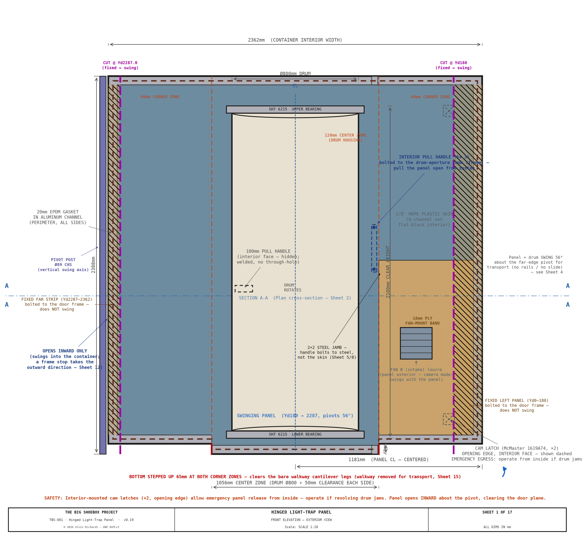
Design goals:
- 100% light exclusion — no straight-line optical path from exterior to interior
- Single-operator personnel access at any time during exposure
- Inward swing (into the container, about the Ø89 pivot) for full-width loading access (IBC totes, equipment) — the panel opens inward only; a frame stop takes the outward direction
- ~56° transport swing about the Ø89 pivot post — carries the B2 punch-out bay inboard of the ISO container doors (clears the closed-door inner face by +29mm) + hardware
- Emergency egress operable from inside without tools
- Weatherproof for outdoor field deployment (IP44 rated seals)
- Single-person mode conversion (~10 minutes)
Interactive 3D model — the revolving light-trap drum, hinged stepped panel, Ø89 swing pivot, fixed door frame, and Fan B. Drag to orbit, scroll to zoom.
2. Panel Construction¶
2.1 Stepped Profile¶
The panel has three thickness zones to accommodate the revolving drum in the center while keeping the corners flush with the container walls.
Sheet 2 — Plan Cross-Section (1:10 horiz / 1:1 depth): Housed Revolving Door — Housing, Drum & Light-Tight Geometry
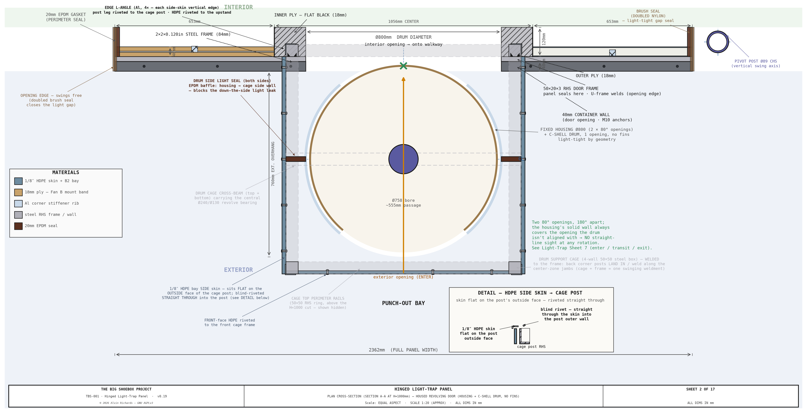
| Zone | Width (mm) | Thickness (mm) | Construction |
|---|---|---|---|
| Near corner | 653 | 40 | 1/8" HDPE skin + 1"×1"×⅛" 6061 Al stiffener grid + 1/8" HDPE skin (40mm framed); 18mm-ply Fan-B mount band bottom→1,225mm |
| Center | 1,056 | 120 | 1/8" HDPE skin + 2×2×0.120in steel SHS frame + 1/8" HDPE skin |
| Far corner | 653 | 40 | 1/8" HDPE skin + 1"×1"×⅛" 6061 Al stiffener grid + 1/8" HDPE skin (40mm framed) |
The 80mm step between the corner and center zones houses the light-trap housing; the corner zones are flush-faced panels that seal against the fixed door frame.
2.2 Frame¶
| Parameter | Value |
|---|---|
| Frame material | 2×2×0.120in (50.8 × 3.05mm) steel SHS |
| Outer dimensions | 2,362 × 2,388mm |
| Skin (each face) | 1/8" HDPE plastic sheet (same material as the drum/housing), set in U-channels — black-pigmented, light-tight, moisture/chemical-proof. Exception: an 18mm exterior-grade plywood band on the Fan B corner (bottom up to 1,225mm) for rigid fan/duct mounting + screw retention |
| Interior finish | Black-pigmented sheet (HDPE) + flat-black touch-in — optically dead at visible wavelengths |
| Frame perimeter | Welded corners, mitered joints |
| Panel weight (full panel: skins + Ø800 housing + B2 bay, excl. drum) | ~139 kg (first-principles: 96 kg framed skins + 22 kg housing + 21 kg B2 bay). See §2.4–2.5 for the movable breakdown + trade study |
Sheet 8 — Steel Frame General Arrangement (interior front elevation): member sizes, weld schedule, corner detail
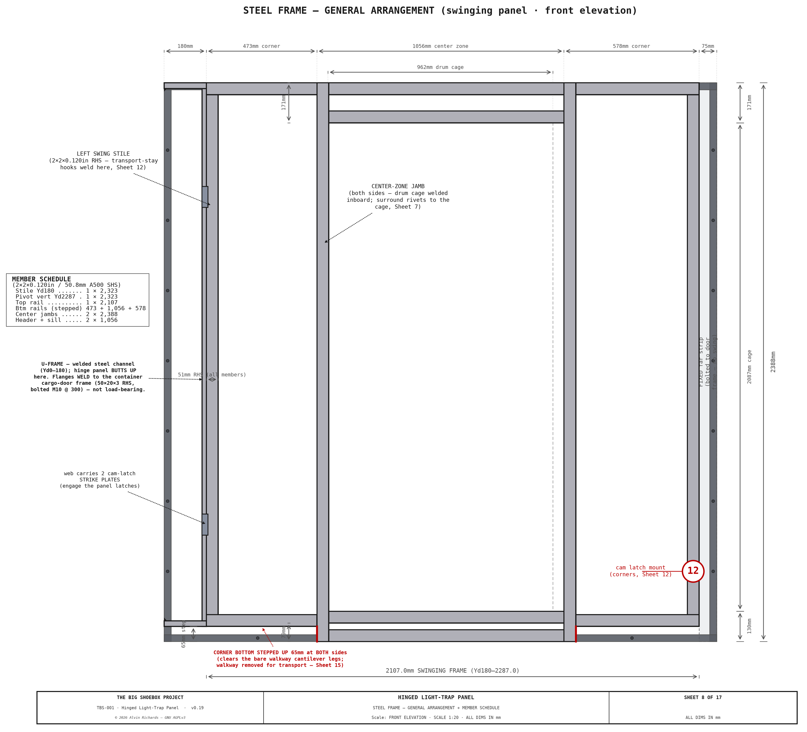
Sheet 9 — Steel Frame General Arrangement (exterior mirror): fastener/hardware face
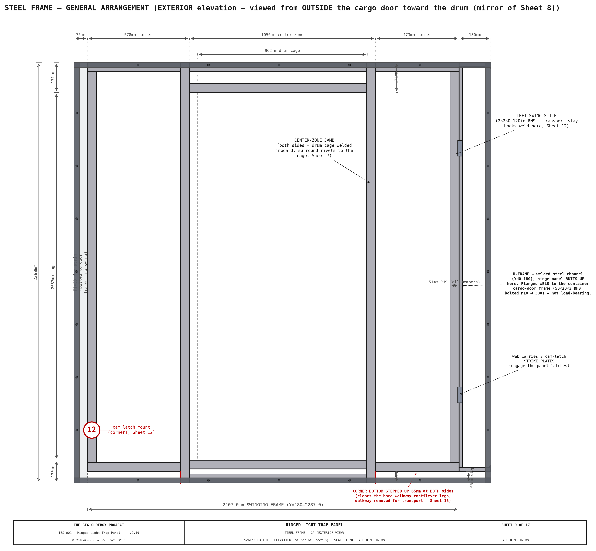
Sheet 13 — Plywood → Frame Attachment (enlarged): welded tab + captive tee-nut
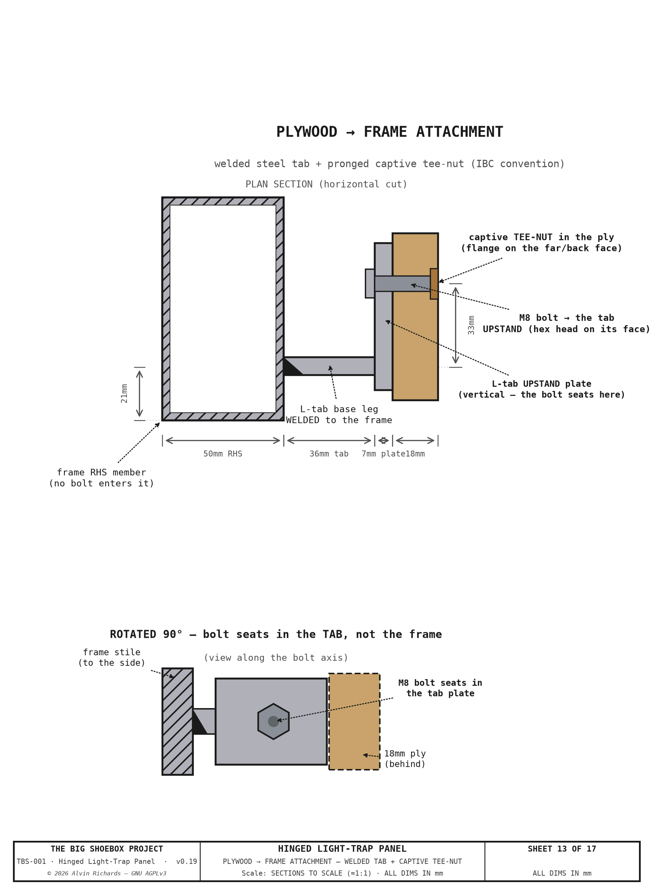
2.3 Perimeter Seals¶
A 20mm closed-cell EPDM compression gasket runs the two vertical edges of the panel, seated in an extruded aluminum channel, and compresses against the fixed welded door frame (50 × 50 × 3mm RHS) when the two opening-edge cam latches engage. The top and bottom edges are nylon strip-brush light seals instead (§6, paths #3/#4): because the panel edge sweeps sideways through the seal as it swings, a brush passes the edge through cleanly where a compression EPDM would drag and deform. Together they give a light-tight seal on all four sides.
A second 20mm EPDM gasket — the housing-surround seal — runs as a ring around the Ø800 light-trap housing aperture. Because the housing is fixed (only the drum rotates inside it), this gasket seals the fixed surround to the frame independently of the moving panel, all the way around the opening the housing passes through. It sits in the same exterior door plane, concentric inboard of the panel-perimeter seal (see §6, light-path #5).
2.4 Movable-Panel Weight Breakdown¶
The transport scheme swings the panel + drum ~56° about the vertical Ø89 pivot, so
the movable assembly is everything that rotates about that pivot. The breakdown
below is first-principles from the geometry constants (reproducible via
src/generators/generate_movable_panel_weight.py); it isolates the swing zone
and deducts the Ø800 housing aperture from the center skins, so it
is slightly lower than the whole-panel figure carried in the
Weight Distribution Report §3.2.
| Group | Component | Construction | kg |
|---|---|---|---|
| A · Skins + frame | Fan ply band (18mm) | Fan B corner, 0.473m × 1.01m, 2 faces | 10.3 |
| HDPE corner skins (1/8") | near above band + far, 2 faces | 12.3 | |
| Corner Al stiffener grid | 1×1×1/8 6061 angle, 6.88m | 2.8 | |
| Center RHS frame | 2×2×0.120in SHS, 11.1m total | 50.8 | |
| HDPE center skins (1/8") | 2×1/8" HDPE, Ø800 aperture deducted | 12.2 | |
| A subtotal | 88.4 | ||
| B · Housing | HDPE housing shell | Ø800×3/16", two 80° openings | 12.5 |
| Steel flange/hub inserts | bolt inserts, isolation | 6.0 | |
| B subtotal | 18.5 | ||
| C · Drum | HDPE C-shell | Ø764×1/8", one 80° opening | 10.6 |
| Al end caps (2) | Ø755×8mm 6061-T6 (bolted hubs) | 19.3 | |
| Rim-angle arcs (2) | 25×25×3 rolled R378, 6061-T6 Al, 280° arc | 1.4 | |
| Steel stub shafts (2) | Ø75×75 | 5.2 | |
| SKF 6215 bearings (2) | sealed deep-groove | 2.6 | |
| HDPE edge stiffeners (2) | ~0.30 kg/m | 1.1 | |
| Grab rail + misc | interior pull rail, fasteners | 4.0 | |
| C subtotal | 44.3 | ||
| D · Bay | Punch-out bay walls | 1/8" HDPE, 6.37m² (0.89m deep) | 19.3 |
| E · Cage | Cage posts + rails + top axle beam | 2×2×0.120in steel SHS, 16.9m | 77.2 |
| Bottom axle beam | 50×40×3 RHS, 0.96m | 3.8 | |
| Bearing mount plates (2) | Ø240×12 steel | 8.5 | |
| E subtotal | 89.5 | ||
| F · Seals | Perimeter EPDM gasket | 20mm, 9.0m | 0.5 |
| Housing-surround EPDM ring | 20mm, Ø800 | 0.1 | |
| Drum wipers + felt/brush | top/bottom + opening edges | 2.0 | |
| F subtotal | 2.6 | ||
| G · Latches | Cam latches (2) | ~0.5 kg each | 1.0 |
| H · Pivot (rotating) | Thrust + journal bearings | carry leaf at pivot | 8.0 |
| Pivot collar / hub | clamps to leaf | 5.0 | |
| H subtotal | 13.0 | ||
| MOVABLE TOTAL (carried-rotating) | ≈277 | ||
| + transport-only locks (stays + 4 saddles) | engaged only when swung | +10 |
By material: steel 193 kg (70%), HDPE 68 kg (25%), plywood 10 kg (4%), aluminum 3 kg (1%), EPDM/other 3 kg (1%).
Pivot loads. The movable mass sits 1.16m from the swing axis (mass-weighted plan centroid), so it puts 3.1 kN·m on the pivot post against the 3.6 kN·m the post is sized for, and 277 kg on the thrust bearing against its 330 kg design load (§5.5). The hub reacts that moment through its two bushings as a 1.7 kN force pair. With the post held at floor and roof, the floor end sees 1.6 kN shear and 0.27 kN·m, which loads each floor-plate M12 to 1.5 kN (M12 Gr.8.8 proof load 50.6 kN).
All light-lock plastic — skins, drum, bay, housing — is one weld-compatible HDPE.
Findings. The two steel frames dominate: the drum support cage (group E) and the center RHS frame that carries it are together about two-thirds of the movable mass. Because the swing axis is vertical, this mass produces no gravity overturning torque about the swing — it sets the pivot-post moment and thrust load above, the handling during assembly (beyond a two-person lift — an engine crane or gantry hoist is required), and total container payload.
2.5 Skin Material¶
The skins are black-pigmented 1/8" HDPE: light-tight, moisture- and chemical-proof in the wet darkroom, and weld-sealed with the same material and process as the drum and housing. Each sheet floats in its U-channel to absorb HDPE's higher thermal expansion, and a 1"×1"×⅛" aluminum stiffener grid at ~400–450mm centers keeps the sheet flat at the EPDM seal line. The one exception is the Fan B corner, which carries an 18mm plywood band (bottom up to 1,225mm) for rigid fan/duct mounting and screw retention.
Sheet 11 — Fan-B Mount Band: Fabrication (fan cutout, fan/duct bolt pattern, frame-tab tee-nut holes)
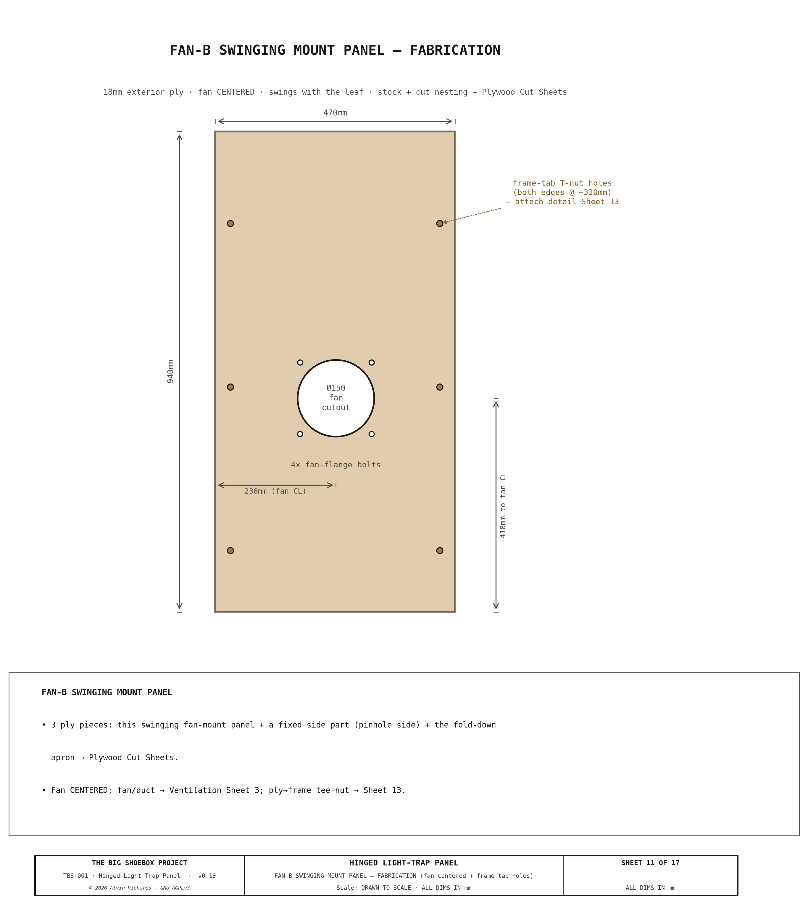
The band's plywood stock and cut nesting are single-sourced on the Plywood Cut Sheets — it is cut, with the corridor and pinhole-wall panels, from the shared 18mm exterior sheets rather than a dedicated sheet.
2.6 HDPE Surround Fabrication¶
The center-zone HDPE surround — the skin that wraps the Ø800 light-trap housing and the forward B2 punch-out bay — is a corner-welded 1/8" HDPE assembly of six pieces: the two center-zone panel-face skins (carrying the personnel light-lock opening), the two bay side walls, and the upper and lower floor/roof caps. The caps are plain plates (no cut-out): each sits on the outside of the top/bottom frame beams and blind-rivets to them. The Ø800 housing outer skin extends to the beam outer faces (see the Light Trap Selection Sheet 9), and its top/bottom edge butts the cap underside, sealed by a silicone caulk bead (no weld, no neoprene). The surround is fastened to the drum cage (50×50×3 RHS) by a lapped, blind-riveted joint — the HDPE laps the cage posts/rails (front + side faces) and is set with 1/8" 18-8 stainless blind rivets on a regular pitch, with a DP8010 sealant bead along the lap for light-tightness. Because the cage is welded into the panel top/bottom rails (one weldment), riveting to the cage ties the surround to the panel structure — it is not a floating skin. The same rivet family is used on the light-trap shell.
The flat-pattern cut sheets for all six pieces are Sheet 6; the housing-join and frame-rivet lap sections are Sheet 7. The housing cut geometry is shared with the Light Trap Selection housing sheet so the surround↔housing interface stays single-sourced.
Sheet 6 — HDPE Surround Flat-Pattern Cut Sheets (6 pieces)
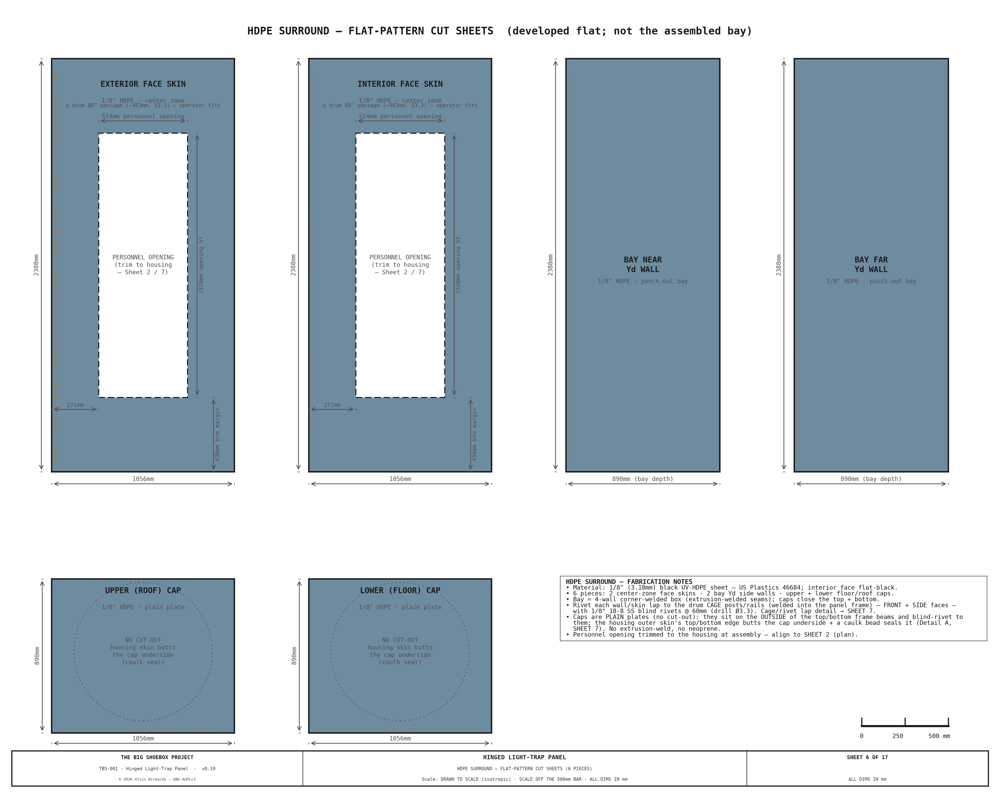
Sheet 7 — HDPE Surround: Housing Join & Frame Rivet Details
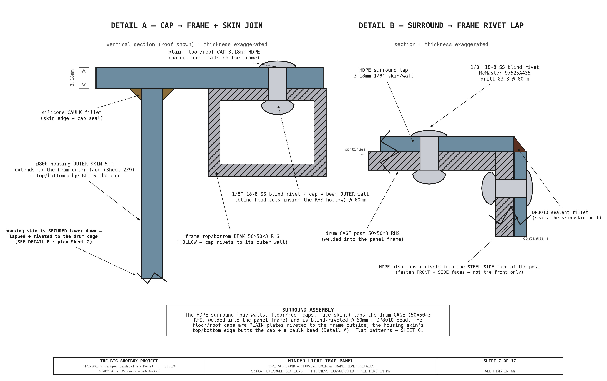
3. Housed Revolving-Door Light Lock¶
The light lock is a fixed cylindrical housing + single-opening C-shell drum — the standard commercial-darkroom-door arrangement — sized for a single operator.
Sheet 3 — Drum Vertical Section Elevation (Section A-A): Walking-height orientation confirmation + Details B & C (panel bottom & top light seals)
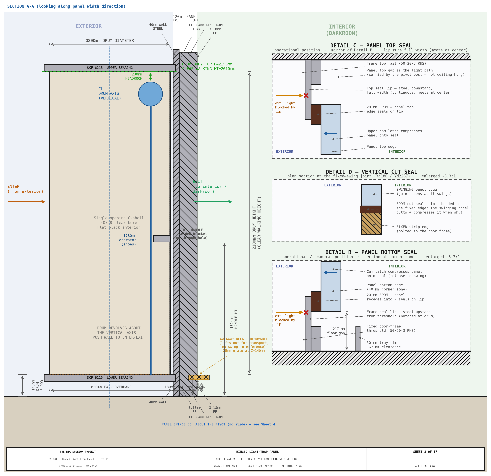
3.1 Specification¶
| Parameter | Value |
|---|---|
| Type | Fixed cylindrical housing + single-opening C-shell revolving drum (no internal fins) |
| Housing outer diameter | Ø800mm (fixed, built into the panel center zone) |
| Housing openings | Two, 80° arc each, 180° apart — one facing exterior, one facing the interior/walkway |
| Drum (rotating) | Ø764mm C-shell, single 80° opening, ~Ø758mm clear bore |
| Passage width | ~487mm (the 80° opening) — single operator, sideways entry |
| Height | Cap top at 2,100mm AFF (cage/beam top 2,217mm); see Light Trap Selection §3 |
| Mounting | Carried with the panel — panel bottom rides at the 217mm floor gap; the drum-cage underside hangs clear of the fixed floor-leg walkway posts + tray rim as it swings. Operator steps up from the walkway deck into the drum. |
| Wall thickness | 5mm (3/16in) UV-HDPE housing + 1/8" HDPE drum — rolled and extrusion-welded plastic skin; opening edge-stiffened |
| Interior finish | Black-pigmented sheet + flat-black touch-in at welds (no etch-prime) |
| Exterior finish | UV-stabilized black/gray sheet — inherent, no primer |
| Clear walking height | 1,883mm clear interior |
| Internal baffles | None — light-tightness is by the fixed-housing geometry (§3.3) |
| Weight | §2.4 groups B (fixed housing) + C (rotating drum) |
3.2 Bearings¶
| Item | Specification |
|---|---|
| Bearing model (×2) | SKF 6215-2RS1 sealed deep-groove ball bearing |
| Bore | 75mm ID, 130mm OD, 25mm wide |
| Clearance | C3 |
| Radial load rating | 68.9 kN basic dynamic (C), 49 kN static (C₀) |
| Operating temperature | −40 to +120°C |
| Stub shafts | 75mm Ø × 150mm steel, bolted through an isolated steel hub to the aluminum drum caps (dissimilar-metal joint) |
| Axial retention | Circlip on stub shaft each side |
| Upper mount | Aluminum housing top ring bolted to panel top rail (6 × M10 SS, nylon-isolated) |
| Lower mount | Steel floor collar bolted to panel bottom rail (8 × M10 SS) — no weld |
| Bearing housing height | 45mm (each) |
3.3 Light Path Verification¶
The light lock is light-tight by geometry. The fixed housing has two openings (one facing the exterior, one facing the interior/walkway), each 80° of arc and 180° apart; the rotating drum is a C-shell with a single 80° opening and no internal fins. Because each opening is narrower than 90° and the two housing openings are 180° apart, the drum opening can never align with both at once — the housing's solid wall always covers whichever opening the drum opening is not facing. So at no rotation angle is there a straight-line path from exterior to interior: daylight entering the bore through the exterior opening is stopped by the drum's solid wall before it can reach the interior opening.
See Light Trap Selection §5 and Light-Trap Sheet 7 (enter / transit / exit verification).
3.4 Drum Seals¶
| Location | Seal method |
|---|---|
| Top | 12mm closed-cell neoprene wiper ring bonded to drum top cap + silicone bead against the frame top plate |
| Bottom | 12mm closed-cell neoprene wiper ring bonded to drum bottom cap + silicone bead against the frame bottom plate |
| Drum↔housing rotating seal | Felt/brush wiper strips on the two vertical edges of the drum opening sweep against the housing inner wall as the drum turns, blocking light leaking around the opening; top + bottom felt wiper rings close the ~15mm annular running gap |
| Housing-to-panel gap (top/bottom caps) | The floor/roof caps are plain plates riveted to the outside of the top/bottom frame beams; the housing outer skin extends to the beam outer faces and its top/bottom edge butts the cap underside, closed by a silicone caulk bead — no weld, no neoprene (Sheet 7 Detail A) |
| Weather rating | IP44 (splash and rain protection) |
3.5 Handle¶
An off-the-shelf 12″ (308mm) round pull handle (McMaster 1871A65, Ø0.5″ bar, 2.06″ standoff) is mounted on the interior face at 900mm height. It bolts (1/4″ screws) to a steel stile that spans and bolts to the two aluminum caps — no welds, and no through-bolt penetration of the drum wall on the exterior face, so the pull load lands in the structural caps and no light leak path is created. The operator enters by pushing the bare exterior drum wall, then uses the interior pull handle to pull the drum closed and brace during exit.
3.6 Access & Light-Tightness Verification (both tests pass)¶
Light-lock access & light-tightness verification (see Light-Trap Sheet 7)
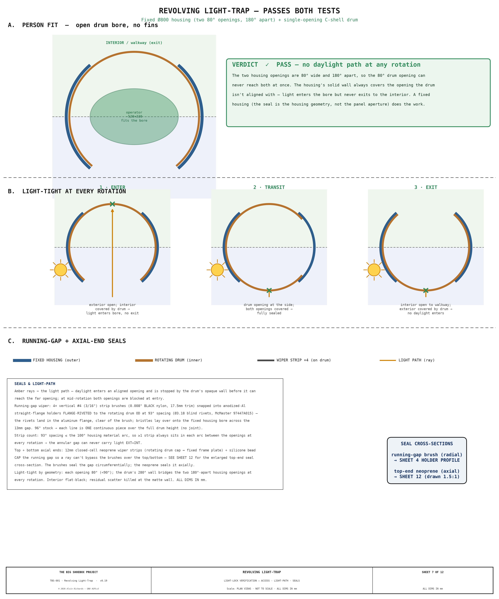
1. Does a person fit? — Yes. The drum is a single-opening C-shell, so the whole ~Ø758mm bore is clear standing space. The 80° opening gives a ~487mm passage (sideways entry), enough for a single operator to enter and turn inside. Emergency egress remains the whole panel swinging open.
2. As the drum rotates, can daylight enter? — No (§3.3): at enter the interior opening is covered by the drum's solid wall, at transit both housing openings are covered, and at exit the exterior opening is covered.
4. Hinges and Latches¶
4.1 Hinges¶
| Parameter | Value |
|---|---|
| Type | Vertical Ø89×8 CHS pivot post (shared with the film plane's far-left rail ends) on a thrust bearing + top/bottom hub bushings (§5.5) — STRUCTURAL SIGN-OFF REQUIRED |
| Quantity | 1 post (carries the full bay + housing + drum swing cantilever, ~3.6 kN·m, SF ~3.7 in S355) |
| Position | Far-left panel edge |
| Mounting | Post bolted at floor and roof (§5.5); the swinging frame rotates on the hub (vertical axis ⇒ balanced at any angle, no gravity torque) |
| Swing | ~56° inboard to the transport position (locked by the top + bottom wall stays); swings clear of the door plane for personnel/equipment access |
Because the pivot axis is vertical, the assembly is balanced at any swing angle — no gravity torque and no free-edge sag, so no swing-support caster is needed. The pivot post and its bearing + weld pattern require a structural engineer's sign-off before fabrication.
4.2 Cam Latches¶
| Parameter | Value |
|---|---|
| Model | McMaster 1619A74 lift-and-turn cam latch |
| Quantity | 2 (both on the opening/free edge — top + bottom) |
| Positions | 210mm from the opening edge; 220mm and 2,168mm from floor (the pivot edge is hinged and needs no latch — a frame stop takes the outward direction) |
| Mounting face | Interior — deliberate safety design for emergency egress |
| Seal compression | Compresses EPDM perimeter gasket against fixed door frame |
Emergency egress: If the revolving drum jams and prevents normal egress, an operator inside the container can release both interior-mounted cam latches independently and push the panel open inward — it swings into the container about the Ø89 pivot, clearing the door plane so the operator can step out. (The panel opens inward only; a stop on the fixed frame takes the outward direction.)
4.3 Interior Pull Handle¶
A grab/pull handle is screwed to the panel's steel frame on the interior face — the left jamb of the drum aperture, at waist height — so a single operator can grip it and swing the heavy panel (movable mass, §2.4) open from inside the container, both for the emergency-egress swing (§4.2) and to initiate the transport rotation (§5). It bolts to the steel frame, not the HDPE skin. This is the panel-swing handle — distinct from the drum-rotation pull handle inside the revolving light lock (owned by the Light Trap Selection set); the two handles serve different mechanisms and are drawn on their own blueprints.
| Parameter | Value |
|---|---|
| Type | McMaster 1871A65 round pull handle (Ø12.7 bar, ~308mm grip, 52mm standoff) — the same off-the-shelf part as the interior drum handle |
| Mounting | Screwed into 1/4"-20 rivet-nuts set in the near wall of the 50 × 50 × 3mm RHS frame jamb — the swing load reacts into the steel frame, not the HDPE skin (rivnuts because the 3mm tube wall can't be tapped and there is no back-access to a nut) |
| Position | Interior face of the swinging panel, on the left drum-aperture jamb. The transport swing pivots on the far edge (§5), so this near-of-center jamb keeps the operator's leverage while landing the load on frame steel right beside the drum (rather than the unbacked HDPE skin) |
| Finish | Matte-black powder-coat — the interior must stay optically dead (stray-light control for the pinhole), so the handle is not left bare/reflective |
See the Master Shopping List for the part; the handle is also shown on the interior-face Sheet 1 front elevation.
Sheet 5 — Interior Pull Handle: mounting detail (handle on rivet-nuts in the RHS frame jamb)
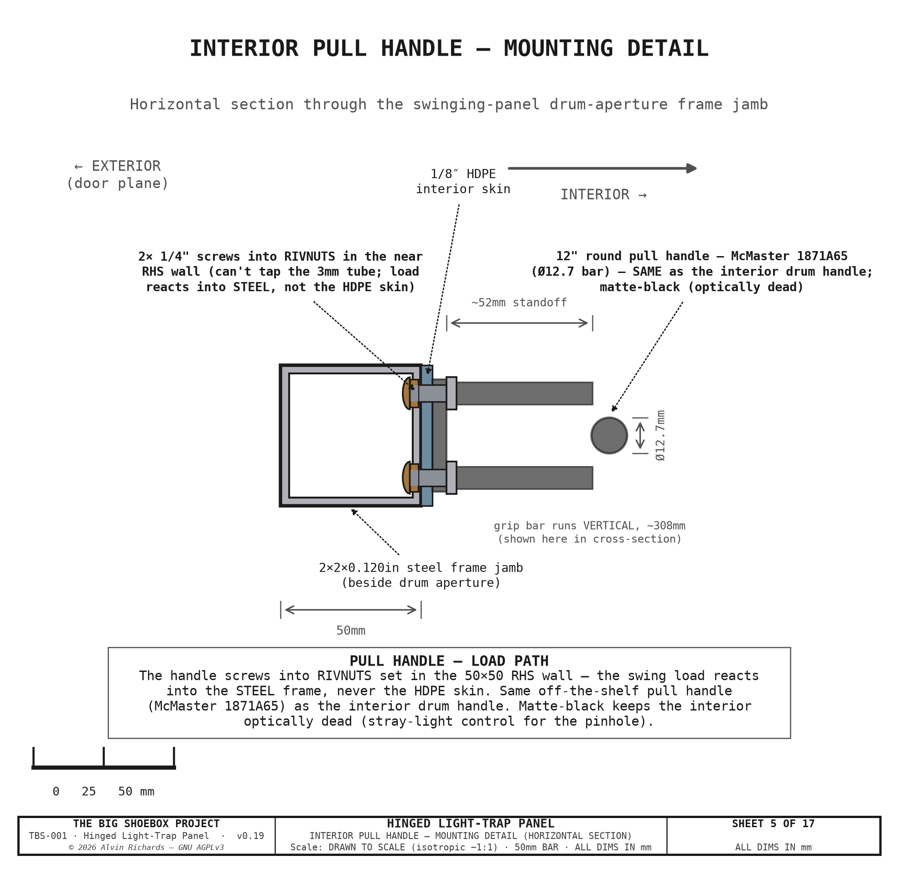
Sheet 12 — Door-Frame Hardware: cam-latch keeper + brush-strip holder (two details) — the transport lock is drawn on Sheet 17.
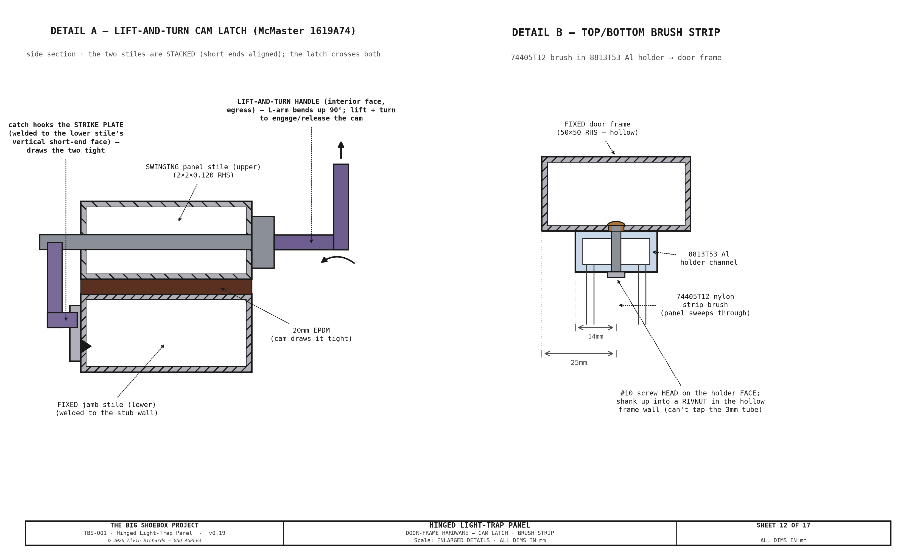
4.4 Emergency Egress — Path Clearance¶
The panel is the camera's egress route, and the left end zone it fronts is kept clear at floor level. No fixed equipment stands in the path, so the open panel yields the full container-width passage — several times any walk-through or emergency-egress minimum. All fixed interior equipment — the electrical panel, battery, pumps, and water lines — sits inboard of the door-end swing sweep, so nothing fouls the panel's inward swing or narrows the clear floor (the container floor plan carries the positions). The revolving drum is the normal light-tight entry and exit; if it jams, the whole panel swings inward as the backup (§4.2).
5. Rotating Transport System¶
For transport the entire swinging assembly — the panel center section, the B2 punch-out bay, and the housing + revolving drum — revolves ~56° about a vertical Ø89mm CHS pivot post at the far panel edge. The swing carries the bay's ~890mm exterior overhang from outside the cargo-door plane to inboard of it, so the ISO doors close.
Two narrow strips stay fixed at the door plane and do not swing: the near strip and the far strip. The cargo doors close outboard of the fixed near strip.
To let the swinging cage cross the film-plane rail line, the two left film rails (top-left + bottom-left) lift out of their drop-in saddles and the left walkway + door-end near-deck section lift out before the swing; all are re-seated to datum afterward.
5.1 Panel Positions¶
Sheet 4 — Rotating transport + swing clearance: panel swings 56° about the pivot (camera vs swung), removable left rails
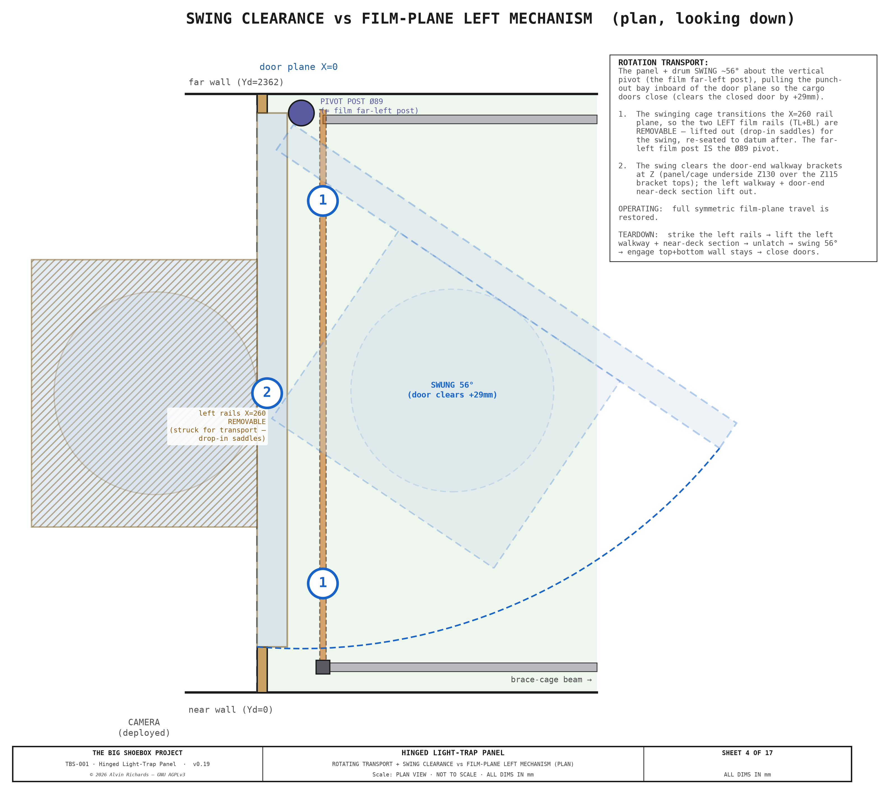
| Position | Bay front-right corner X | Container doors clear? |
|---|---|---|
| Operational (0°) | −890mm (bay protrudes ~890mm outside the door plane) | No — the cargo doors stay open during operation |
| Transport (swung 56°) | +29mm clearance to the closed-door inner face (swept-frame min X 58.6mm − 30mm door-leaf inboard) | Yes — the swept frame is fully inboard of the closed door |
5.2 Locking¶
| State | Method |
|---|---|
| Operational (0°) | 2 × interior cam latches (§4, opening edge) compress the EPDM vertical perimeter + cut seals against the door frame; the top + bottom strip-brush seals are passive (always engaged, no compression) |
| Transport (swung 56°) | Top + bottom wall stays — a turnbuckle from a receiver lug welded to the swinging panel's left perimeter 2×2×0.120in steel SHS stile (the steel frame member at the swing cut) to an anchor on the near wall, the pair forming a couple. Engaged after the swing, released before swing-back. |
Stay lugs land on steel, not the skin. The transport-stay couple carries real tension, so both lugs weld to the left perimeter RHS stile of the swinging frame — not the 1/8" HDPE plastic skin. The perimeter stile is the farthest point from the pivot (best lever arm) and a continuous welded steel load path into the frame.
The complete transport lock is detailed on Sheet 17 — the general arrangement, the panel-side receiver lug, and the near-wall anchor. The wall is a single 1.6mm corrugated sheet, so each bolt crosses a ~28mm hollow; a crush sleeve (1-3/8in OD × 1/4in wall DOM steel tube, cut to the measured hollow) fills it so the 225 N·m preload (70.7 kN at 75% of proof load, K = 0.2) clamps plate, sleeve and sheet instead of folding the corrugation. The sleeve runs at 124 MPa (SF 2.02 on 250 MPa mild-steel yield) and bears on the sheet at SF 2.78 (Corten, 345 MPa yield). The 90mm length covers the 54mm grip plus washers, split-lock, nut and two threads, with spare length for corrugation-depth variation. The turnbuckle is a 5/8in jaw-eye galvanized unit (JETBGV58X6). Both ends are modeled in 3D.
Sheet 17 — Transport Lock: general arrangement + panel-side receiver lug + near-wall anchor
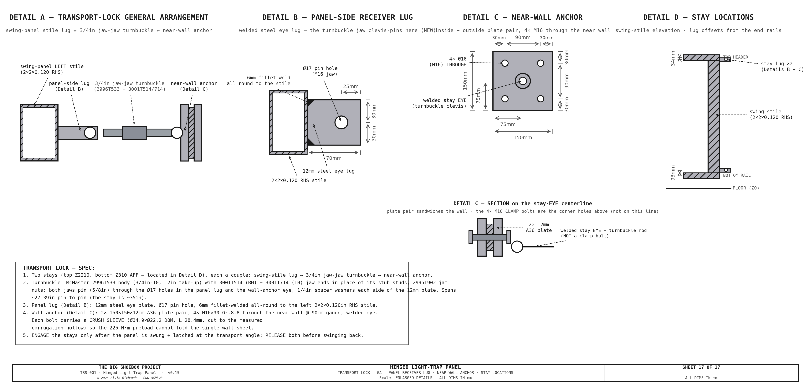
5.3 Floor Gap¶
The panel bottom rides at a 217mm floor gap and the drum-cage underside at Z140, both carried by the pivot post on its thrust bearing + hub bushings. The heights are set by the transport-swing clearance: as the panel + drum swing across the container, the cage underside must clear the tallest fixed obstacle in the swept path — the left walkway's floor-leg cantilever posts (Z115), which stay bolted during the swing and stand taller than the processing-tray rim (Z70–81 on the sloped floor). The cage clears the posts by 25mm and the tray rim by at least 59mm (the bottom axle beam uses a shallower section to win 10mm from the lower hub without raising the drum), at a cost of 87mm of drum interior — still clearing a 1,780mm operator by 103mm.
Why the panel bottom is stepped (corner zones at 282mm). The 217mm gap above is the center
zone, under the drum bay. The near/far corner zones of the panel bottom step up to 282mm
(PANEL_FLOOR_GAP_SIDE) — a separate transport-swing clearance from the drum-cage gap. With the
walkway grate lifted out for transport, the panel corners swing over the bare wall-cantilever
walkway-bracket legs, which stand to ~200mm on the near/far side walls; the corner bottom is raised
to clear those legs with margin (≥50mm by design, 82mm as built — the swing is about the vertical
pivot, so any positive clearance over the leg top suffices). The center zone has no wall brackets
in its swept path, so it stays at the lower 217mm. The 65mm difference is PANEL_BOTTOM_STEP. (This
corner height sets the corner-zone apron height — it is the top of the removable pull-out strips
(Z282) — see §6.)
The swing is about a vertical pivot, so the cage underside stays at the same height throughout — this is what makes the deep Ø800 housing transport-feasible without a slide; a floor-mounted housing would have fouled the tray. The 217mm floor gap is closed in the operational position by the pull-out corner apron (§6, Sheet 16). The clearance is drawn on Sheet 15 (transport-swing bottom-clearance section).
Sheet 15 — Transport-Swing Bottom-Clearance Section (Yd–Z): drum-cage underside vs the fixed floor-leg posts + tray rim, walkway grate lifted out
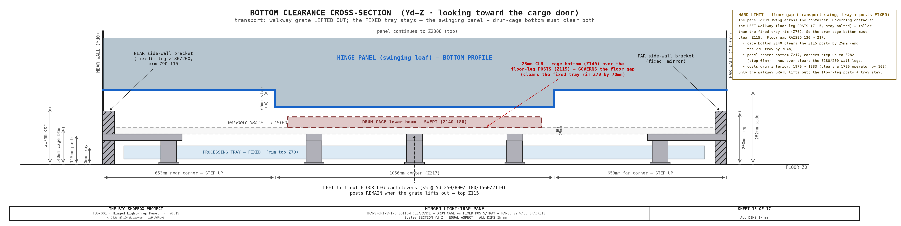
The gap would otherwise be a straight light path, so it is closed by the pull-out corner apron (Sheet 16; light path #3 in §6): a fixed full-width base (Z0–130, continuous across the door bottom, never moves) plus two removable pull-out strips at the corner zones (near Yd0–653, far Yd1709–2162; Z130–282, 18mm exterior ply). The drum-bay center (Yd653–1709) has no pull-out — the fixed base closes Z0–130 and the drum's own vertical cage seals the center Z130→217. Each strip locates in a 45° chamfer in the base at the bottom (ext-low → int-high, so it gravity-seats exterior-down) and butts a flat ply lip cleat lapped on the leaf's exterior face at the top (this cleat is batten B1); 1590A13 draw latches hold the strip — four per strip: two bottom latches on the interior face (one at each strip end) clamp it down onto the chamfer seat, and two exterior span latches (one at each strip end) bridge B1 and a second coplanar ply batten B2 (added to the strip's exterior face) to clamp the strip up to the leaf/lip — on the door side, so nothing projects into the darkroom and the film-plane beam (which an interior top latch fouled) stays clear (Sheet 16 Details D–F). The apron ply cuts from the SYP sheets A–C (Plywood Cut Sheets), so it buys no sheet of its own. In operation the strips are latched in and seal; for the transport swing the draw latches are released and the strips lifted out — they are simply absent while the leaf sweeps (no fold arc), and stow strapped flat inside the container. This sidesteps the clearance conflict a fixed apron hits: a fixed apron reaching the seal plane would sit in the leaf's horizontal sweep and block it, whereas the removable strip is gone during the swing.
5.4 Transport Conversion Sequence¶
The swing carries the drum cage through the film-plane rail line, where the film-plane mechanism's left edge sits, so the two left film rails (TL + BL) must be struck before the swing and re-seated after (the tapered dowels return the film datum). The muslin screen must be struck regardless — the fragile screen cannot travel mounted. The swing clears the door-end floor-leg posts: the cage underside passes over the post tops (they stay bolted), so no floor-leg post is demounted.
The conversion is a single-person operation. Every part that sits in the swing path is designed to be removed by hand without tools: the left walkway + door-end near-deck lift out, the left film rails release from their clamp bars and saddles, and the two pull-out apron strips release from their draw latches and chamfer seats. The drum is pinned against rotation for the move, and the muslin screen and its demountable brace cage (saddle/thumbscrew portals) come down because the screen cannot travel mounted. The swing itself is assisted and balanced about the vertical axis (no gravity torque), and the swung frame clears the closed ISO cargo doors by +29 mm. The step sequence is in the Operating Manual §5.5 (to transport) and §1.3 (to operational).
5.5 Pivot-Post Assembly¶
The whole movable assembly swings on a fixed Ø89×8 CHS post (3" NPS Sch-80, S355 — shared with the film plane's far-left rail ends), running floor→roof and bolted at both ends to 200 × 140 × 20mm mount plates. The post axis is only 75mm off the far wall, so the plates are rectangular to stay clear of it. The floor plate bolts down with 4× M12 into tapped bosses on the left floor-anchor sub-plate — the same self-tapped strongback the five walkway legs use, run on to the far wall (§5.2 of the Walkway Report), because the container's cross-member stations aren't standardized. The roof plate is bolted to the roof rail. The post is a structural positioning member carrying the ~3.6 kN·m swing cantilever (SF 3.7); the floor-anchor loads are in §2.4.
The moving hub rides the post and swings with the frame: a 51118 single-direction thrust bearing at the base carries the ~330 kg vertical load, and two iglide J journal bushings (JFM-9095-100, top + bottom) take the radial load and the overturning couple. The hub ties to the panel through three welded hinge brackets bolting to the steel center-zone jamb (2× M12 each, through the RHS into a backing plate — not the HDPE skin). The pivot post, its bearings, and the frame→hub bracket still require a structural sign-off before fab.
Sheet 10 — Pivot-Post Assembly (section + frame→hub bracket + floor anchor plate)
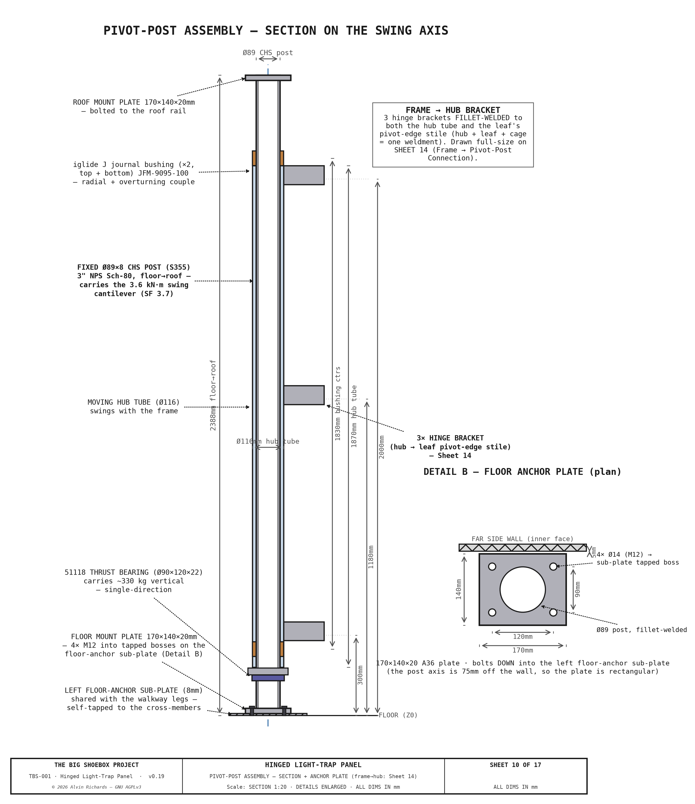
Sheet 14 — Frame → Pivot-Post Connection: the 3 welded hinge brackets tying the moving hub to the center-zone jamb
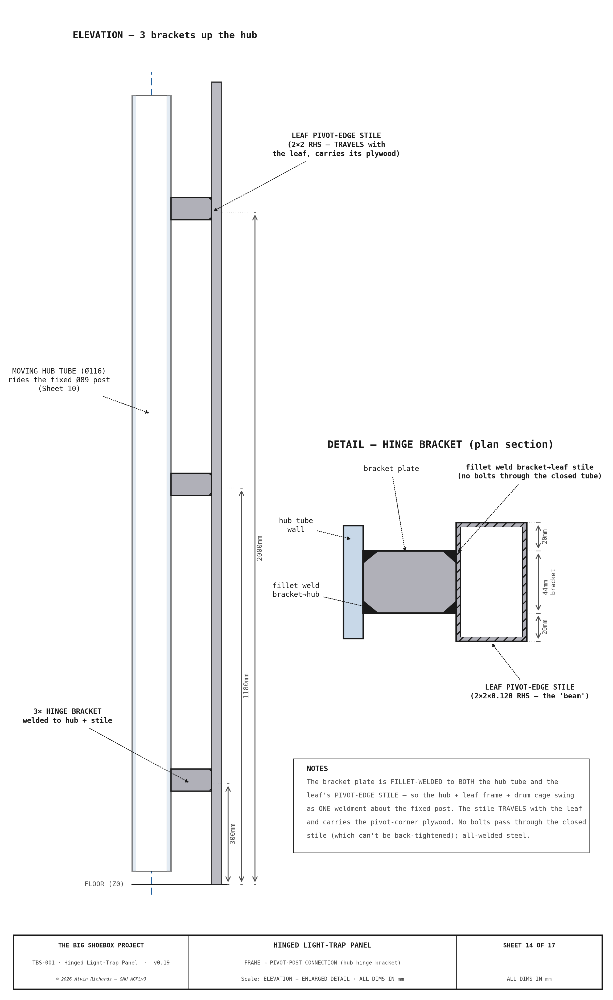
6. Light Seal Design¶
The swinging panel seals against the fixed door frame in its operational (closed) position. Five light ingress paths are sealed:
| # | Light path | Seal method |
|---|---|---|
| 1 | Panel perimeter (left/right) → door frame | 20mm EPDM gasket in an aluminum channel down each vertical edge, compressed by the 2 × McMaster 1619A74 lift-and-turn cam latches (opening edge, top + bottom) against the fixed door frame. (The top + bottom edges are strip-brush seals — paths #3/#4 — not compression EPDM.) |
| 2 | Swing cuts → fixed strips | The swinging center+corners separate from the two FIXED strips (near Yd0–180, far Yd2287–2362, which carries the pivot) along vertical cuts. A 20mm EPDM cut seal runs the full panel height down each cut, compressed by the cam latches when the panel is latched at the door plane. (Sheet 3, Detail D.) |
| 3 | Panel bottom → 217mm floor gap | Pull-out corner apron (Sheet 16) — a fixed full-width base (Z0–130, continuous, never moves) + two removable pull-out strips at the corner zones (Z130–282, 18mm ext ply); the drum-bay center has no pull-out (the fixed base + the drum's own vertical cage seal it). Each strip locates in a 45° chamfer in the base and butts a flat ply lip batten B1 on the leaf's exterior face; 1590A13 draw latches hold it — four per strip: two bottom latches (interior, one at each strip end) span the strip↔base joint (keeper on the fixed base) and draw the strip DOWN onto its chamfer seat, and two exterior span latches (one at each strip end) bridge B1 and a second coplanar batten B2 on the strip's exterior face, drawing it UP to the leaf/lip on the door side (so nothing projects into the darkroom — this clears the film-plane beam that an interior top latch fouled); the chamfer also gravity-seats the strip; released, nothing passes through the strip or lip, so the strip slips out of the chamfer. EPDM at every joint, flat-black interior. The strips are removable, not fixed — the panel swings as a pure horizontal rotation about the vertical pivot (the leaf bottom sweeps sideways at the seal plane, it never lifts), so a fixed apron reaching that plane would block the swing; the pull-out strip is simply absent during the swing (no fold arc) and stows strapped inside. Sheet 16 Details A–F. |
| 4 | Panel top → frame gap | Fixed-frame top brush seal — the mirror of #3: a nylon-filament strip brush in a holder on the frame top rail, its bristles reaching ~30mm below the panel top edge. The drum stub shaft stops below it, so the brush runs as one continuous member across the full panel-top width — no notch — meeting across the center. The panel + drum-box top edge sweeps through the bristles as the panel swings — a deliberate ~30mm bristle overlap in the closed position, not a clash. No cam-latch compression on this edge; the bristles are the seal. (Sheet 3, Detail C.) |
| 5 | Housing surround → door frame | The Ø800 light-trap housing carries the revolving drum and swings with the panel. A second 20mm EPDM gasket rings the housing aperture (floor gap up to the housing top), concentric inboard of the panel-perimeter seal (#1), seated in the door plane. In the closed position it seals the housing surround to the frame all the way around the opening — light-tight. (3D: the door_frame() "Housing surround seal", in both the light-trap and overview models.) |
Seal verification: The five seals are verified light-tight by a dark-adaptation check inside the container with all seals engaged, after every mode conversion (Operating Manual §1.4 and §1.8).
Sheet 16 — Pull-Out Corner Apron: fixed full-width base + removable corner strips closing the floor gap (Section A + Details D–F: chamfer, leaf lip register, 1590A13 draw latch)
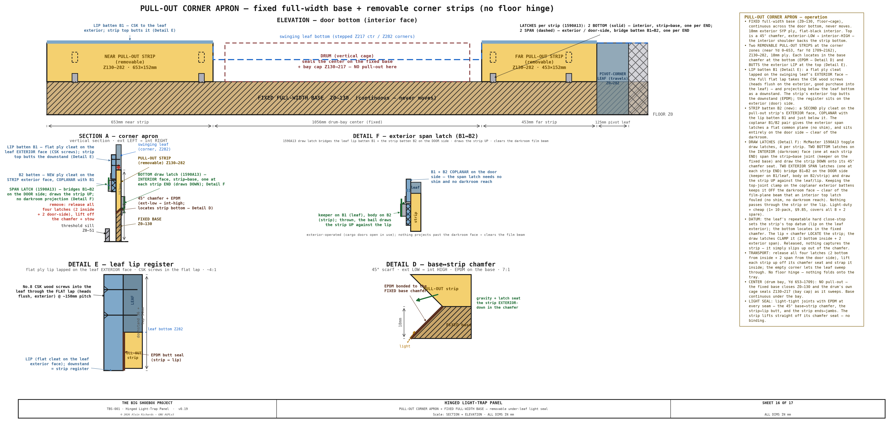
7. Fixed Door Frame¶
A fixed welded door frame provides the seal landing surface (perimeter, cut, and lip seals) for the swinging panel, and the structural anchor for the wall-stay eyes.
| Parameter | Value |
|---|---|
| Material | 50 × 50 × 3mm RHS mild steel |
| Position | X=0 (container end wall inner face) |
| Function | Seal landing for the swinging-panel vertical perimeter + cut seals + housing-surround EPDM, plus the top + bottom strip-brush light seals |
| Attachment | Welded to container end wall structural members |
| Cut-seal landings | 2 × vertical EPDM landings (the swing cuts between the swinging panel and the fixed strips) |
| Bottom light seal | Pull-out corner apron — fixed full-width base (Z0–130) + 2 removable pull-out strips (corner zones, Z130–282) held by 1590A13 draw latches (4 per strip: 2 bottom interior clamping to the chamfer seat + 2 exterior span latches bridging battens B1↔B2, door-side, clamping up to the leaf/lip); removed + stowed inside for transport (see §6 path #3, Sheet 16) |
| Top brush seal | Mirror of the bottom: continuous nylon-filament strip brush in a holder on the frame top rail, bristles reaching ~30mm below the panel top edge, full panel-top width and continuous across the center (the drum does not reach the top, so no notch) — the panel + drum-box top edge sweeps through the bristles (see §6 path #4) |
8. Parts List¶
See the Master Shopping List, filtered to this report's systems for the same parts with suppliers, current prices, and click-to-sort/filter.
Cost Summary¶
| Assembly | Low estimate | High estimate |
|---|---|---|
| Panel structure (incl. B2 bay + pull handle) | $1,195 | $1,368 |
| Housing + drum (plastic skin) | $3,173 | $4,184 |
| Swing pivot hardware | $867 | $1,167 |
| Fixed door frame | $419 | $599 |
| Total | $5,654 | $7,318 |
9. Maintenance¶
The panel's wear items are its elastomer seals (the EPDM perimeter gasket and the cut seals at the swing boundaries, which flex on every mode conversion; the neoprene drum wipers and their silicone bead), the wall-stay turnbuckles and anchors, the cam-latch keepers (adjustable for clamp force), and the flat-black interior paint. The 51118 pivot thrust bearing is a greased bearing; the iglide J journal bushings are self-lubricating and run dry (no oil or grease on the post journal bands); the SKF 6215 drum bearings are sealed for life. The inspection and service schedule is in the Operating Manual — Maintenance.
10. Source References¶
| Item | Source |
|---|---|
| SKF 6215-2RS1 bearing specification | SKF Product Catalog; ratings per RS Components 764-3569 — 68.9 kN dynamic (C), 49 kN static, −40 to +120°C, sealed |
| Lift-and-turn cam latch | McMaster 1619A74 — adjustable lift-and-turn tight-hold cam latch, 150 lbf |
| Turnbuckle + eye/hook (wall stays) | McMaster-Carr turnbuckles — drop-forged jaw/eye turnbuckles for the transport lock |
| Pivot thrust bearing (51118) | Motion — SKF 51118 — single-direction thrust ball bearing, Ø90 × 120 × 22mm, static Cₒ ≈190 kN, for the pivot base |
| Pivot journal bushings (JFM-9095-100) | igus — iglide J JFM-9095-100 — iglide J self-lubricating flange bushing, Ø90 ID × 95 OD × Ø103 flange × 100L, top + bottom post radial location |
| EPDM gasket material | McMaster-Carr — closed-cell EPDM, UV-stable |
| Neoprene wiper strip | McMaster-Carr #93855K6 — closed-cell, pressure-sensitive adhesive |
| Revolving drum light trap design | See Light Trap Selection for full commercial comparison and custom specification |